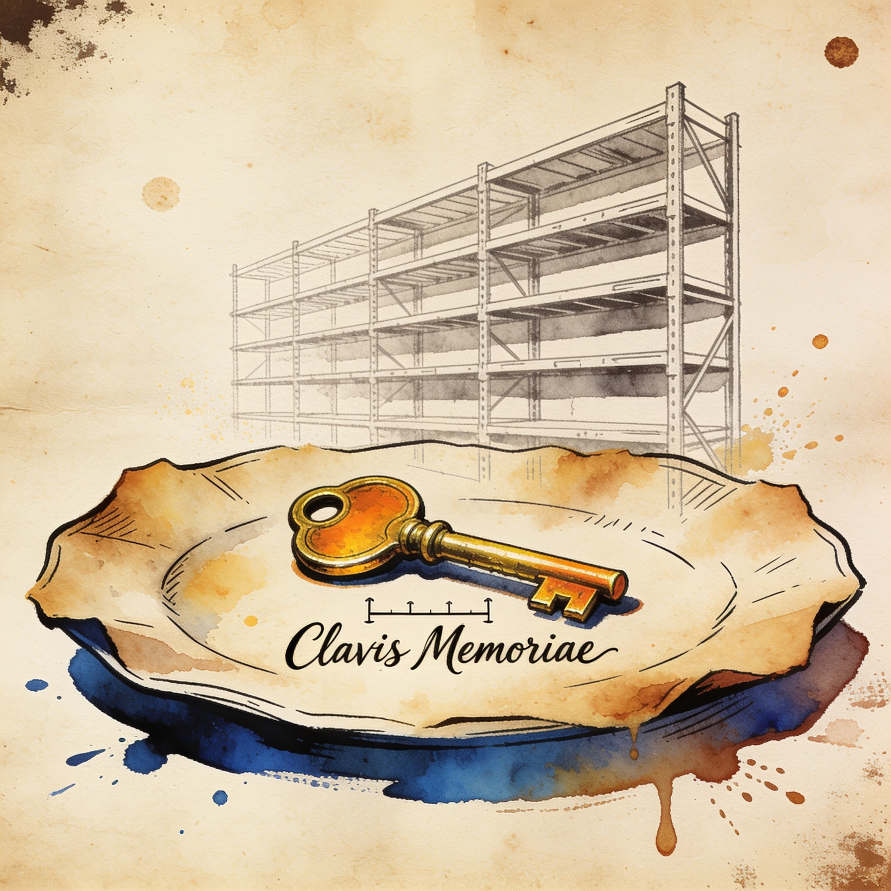

Memory costs
DRAM prices roughly double in 2026 as AI squeezes PC memory supply
Nikkei reports DRAM has risen to about double its end-of-2025 level as memory makers prioritize HBM and server DRAM for AI data centers over commodity PC memory. Japan PC shipments fell 30% year-on-year in April-September amid the stretched supply — a direct cost headwind for every local inference rig built this quarter.